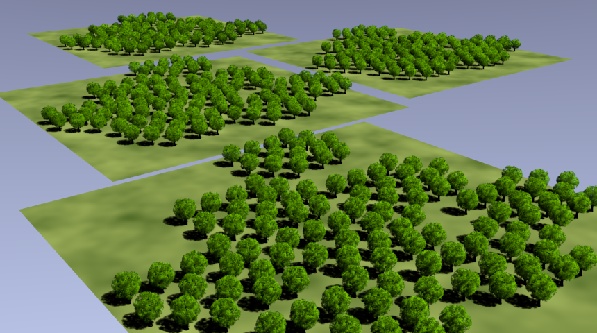
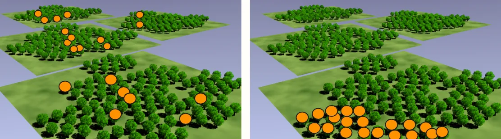
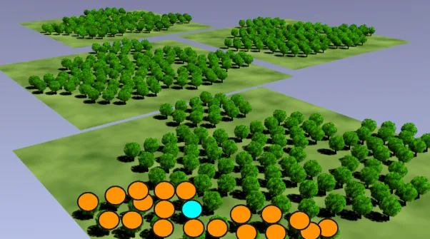
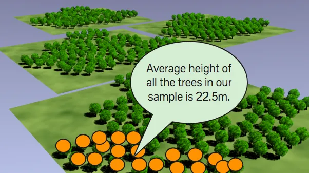
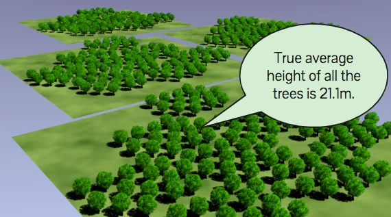
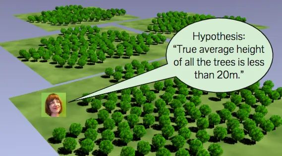

Statistical thinking
What is statistics?
Analytics deals with what we know, the facts/data/information we have
Statistics (statistical inference) deals with what we don’t know, the facts/data/information we wish we had
Statistics is the science of changing your mind under uncertainty
Bayesians change their mind about beliefs
Frequentists change their mind about actions
What is a population/sample?
Population: A collection/set of all things/items/objects we are interested in (e.g., all trees in Central Park)
Sample: Any subset of/collection of items from the population
By definition, only the population is of interest to us (it is the legal contract at the heart of the whole pursuit of statistics), not a single item/object or a subset of the population
Here's the deal: by writing down a description of the population, you're agreeing that only the population, the whole population, and nothing but the population is what you are interested in. By reading further, you accept these terms and conditions.
It's up to you to pick what you are interested in.
The sample is the facts/data/information we have and the population is the facts/data/information we wish we had
Observation: A measurement from a single item in a sample
What is a statistic/parameter?
Statistic: A summary measure computed from a sample, i.e., any way of mushing up the facts/data/information we have (boring!)
Parameter: A summary measure of a population, i.e., any way of mushing up the facts/data/information we don’t have (interesting!)
Statistics (the discipline) is the digestion of statistics (summary measures of a sample) into parameters (summary measures of a population)
If you have all the facts/data/information about the population of interest you know its parameters with certainty (analytics)
If you don’t have all the data/facts/information about the population of interest, you can’t know its parameters with certainty (statistics)
What's it going to take to know the parameter? You'll have to measure all the trees with no errors! Once you've done that, do you have any uncertainty? Nope, you have all the information. You can finish up by using analytics — just go ahead calculate the average. Then the statistic is the parameter because your sample is the population.
What is a hypothesis?
Parameter: The fact we wish we had
Hypothesis: A description of what the true value of a parameter might be, but it doesn't have to be true!

We'll be figuring out whether our sample makes our hypothesis look ridiculous to determine whether we should change our minds.
What is an estimate/estimand/estimator?
Estimate: Just a fancy word for best guess (of the true value of a parameter, the estimand)
It's the value our best guess takes, while an estimator is the formula we use for arriving at that number.
The intuitive best guess (that comes from treating the sample as if it was the population) is pretty good (most of the time)
The best guess if we only have the height of one tree is the height of that tree
Let's suppose that all you know is that one of the trees is 23m tall. Can you please tell me your estimate for the true average height of all the trees?23m? Yeah, me too!
We'd have to guess 23m if this is our only information — if we guess anything else, we're just makin' stuff up. 23m is all we know, so we have to guess 23m. To get something else, we'd have to be incorporating more information (which we don't have in this example) or we'd have to make assumptions… at which point we're again dealing with something other than the facts we have in this example.
In 99%+ of cases you encounter in real life, just treating your sample as if it's your population and going with whatever's in it is how you get the best guess.The best guess if we have the height of a few trees is the average height of that sample/set of trees
The best guess if we have the height of many trees is the average height of that sample/set of trees
Intuitively, estimate 3 is better than estimate 2 and estimate 2 is better than estimate 1. More data makes the estimate better!
But how much better than estimate 2 is estimate 3? And how good is it? To answer these questions we need statistics/statistical inference
Why do we need statistical inference? Why not just use the intuitive best guess? Because it may be wrong and the only way to know if it is right or wrong is if you had certainty, i.e., you have the data/facts/information about all things/items/objects in the population of interest!
It may be wrong, but any other guess is worse than the best guess!
But is it good enough? Good enough for what? To change your mind!
What does it mean to change your mind with data? Is the evidence strong enough to change your mind?
In order to change your mind, you need to have your mind set before the data are known to you, i.e., you need to have either a default action (frequentists) or a prior opinion (bayesians)!
If you mind cannot be changed then forget about statistics and just go with the best guess (analytics)!
When we don't have all the facts, all we can hope for is combining the facts/data/information we have with assumptions to make reasonable decisions.
References
https://towardsdatascience.com/statistician-proves-that-statistics-are-boring-4fc22c95031b